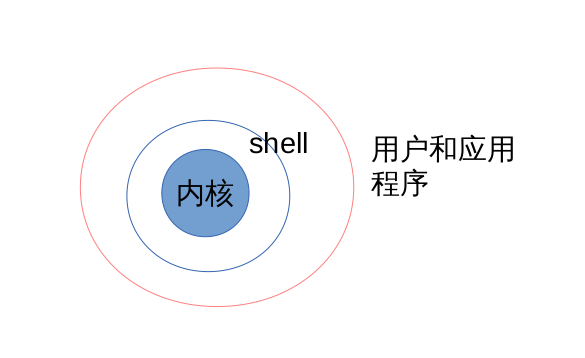
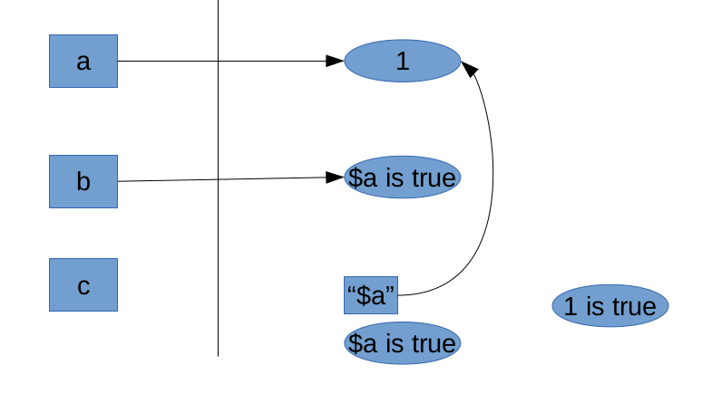

教学环境介绍
- client rhel7.2 172.25.0.10
- server rhel7.2 172.25.0.11
如果真的想走IT这条路，想真正管理好你的主机，那么学习自动化管理工具Shell Scripts 非常重要！
就是将一些命令放在一起去执行，并且不需要编译就能执行，很方便，所以在日常工作中可以用shell scripts来简化我们的管理。可以但到我们linux中，很多服务的启动都是透过shell脚本来启动的。
如果你不会脚本，那么服务器出问题的时候，真的会求助无门，所以好好地学习吧！
shell 简介
什么是 shell
Shell 是一个命令解释器 , 是人与操作系统之间的桥梁。

我们平时无论任何操作 , 最终都要操作硬件 , 比如输入一个字符 “ a ”, 那么信号 首先会从键盘传递到主板 , 通过主板总线传递到内存 ,CPU, 显卡等 , 最终经过显卡的运 算完成后在屏幕的某个位置 , 显示一个特定字体的字符 “a ”, 这一整个过程可以说是 不断的和硬件打交道了 , 但是如果让人去发送这些硬件操作码显然不适合 , 因为这不是人干 的事 , 所以我们有了操作系统 , 操作系统通过加载一定的硬件驱动 , 从而控制硬件 , 操作硬 件 , 那剩下的事就是如何和操作系统通信了 , 对于普通的系统管理员来说 , 这也是一件非常 困难的事 , 为了方便人和操作系统沟通 , 我们开发了 shell 。
Shell 可以将我们平时运行的一些指令解释给操作系统执行 , 方便管理员操作系统。 而 Shell 的脚本其实是一种命令的堆积 , 我们将所有需要执行的命令 , 以从上至下的方 式写在一个文件当中 , 交给 shell 去自动解释执行。
shell 历史
在 AT&T 的 Dennis Ritchie 和 Ken Thompson 设计 UNIXTM 的时候 , 他们想要为 用户创建一种与他们的新系统交流的方法。 那时的操作系统带有命令解释器。命令解释器接受用户的命令 , 然后解释它们 , 因而计 算机可以使用这些命令。
但是 Ritchie 和 Thompson 想要的不只是这些功能 , 他们想提供比当时的命令解释器 具备更优异功能的工具。这导致了 Bourne shell( 通称为 sh) 的开发 , 由 S.R. Bourne 创 建。自从 Bourne shell 的创建 , 其它 shell 也被一一开发 , 如 C shell(csh) 和 Korn shell(ksh) 。
当自由软件基金会想寻求一种免费的 shell, 开发者们开始致力于 Bourne shell 以及当 时其它 shell 中某些很受欢迎的功能背后的语言。
这个开发结果是 Bourne Again Shell, 或称 bash 。虽然你的 Red Hat Linux 包括几 种不同的 shell,bash 是为互动用户提供的默认 shell 。
常见的 shell
- Bourne shell 即 sh:AT&T 贝尔实验室编写的一个交换式的命令解释器。
- C Shell :Bill Joy 于 20 世纪 80 年代早期开发。为了让用户更容易的使用 , 他把语法 结构变成了 C 语言风格。它新增了命令历史、别名、文件名替换、作业控制等功能。
- korn shell (ksh) 是一个 Unix shell 。它由贝尔实验室的 David Korn 在二十世纪八十 年代早期编写。它完全向上兼容 Bourne shell 并包含了 C shell 的很多特性。
- Bourne-Again Shell: bash 是一个为 GNU 项目编写的 Unix shell 。它的名字是一 系列缩写 :Bourne-Again SHell — 这是关于 Bourne shell(sh) 的一个双关语 (Bourne again / born again) 。 Bourne shell 是一个早期的重要 shell, 由 Stephen Bourne 在 1978 年前后编写 , 并同 Version 7 Unix 一起发布。 bash 则在1987 年由 Brian Fox 创造。 在 1990 年 ,Chet Ramey 成为了主要的维护者。 bash 是大多数 Linux 系统以及 Mac OS X v10.4 默认的 shell, 它能运行于大多数 Unix 风格的操作系统之上 , 甚至被移植到了 MicrosoftWindows 上的 Cygwin 和 MSYS 系统中 , 以实现 windows 的 POSIX 虚拟接口。此外 , 它也被 DJGPP 项目移植到了 MS- DOS 上。
- POSIX shell :POSIX shell 与 Korn shell 非常的相似 , 当前提供 POSIX shell 的最 大卖主是 Hewlett-Packard 。
为什么 Shell
- 解决重复操作的作业。
- 节约时间 , 提高工作效率。
- 功能强大 , 使用简单。
# 1.查看系统当中合法的shell |
# 2.修改用户登录时使用的shell程序 |
useradd: Permission denied.
useradd: cannot lock /etc/passwd; try again later.
chsh: user 'batman' does not exist
# 3.用户的登录流程 |
shell的变量功能
什么是变量
- 让一个特定的字符代表不固定的内容，有点像y=ax+b,y就是变量，
- 用简单的字眼来代替比较复杂或者容易变动的数据，好处就是方便！
比如系统中的MAIL和USER变量，根据当前登陆的用户而变化
- 对脚本的用处——例如ule考试的评分脚本，根据你们的机器号的不同，去检测不同的学生考试成绩
变量的设置、查看和取消 echo unset
查看 echo ${MAIL} |
课堂练习
1. 设置变量myname=superman并查看变量的值；
2. 设置变量myname1=I am superman
myname2="I am superman"
myname3='I am superman'并查看所有变量的值；
3. 设置两个变量分别为name1="$myname is myname"和name2='$myname is myname';并查看变量的值；
4. 设置变量kernel的值为当前系统的内核版本号；
5. 设置变量num的值为/etc/目录下所有以.conf结尾的文件的总数；
6. 取消练习中的有所变量。

变量内容的删除和替换
变量设定方式 说明 |
课堂练习
- 设置变量path=${PATH} 并查看；
- 设置变量path=/batman/bin:${path}:/superman/bin 并查看；
- 读取变量的时候将/batman/bin:及第一个冒号及之前的删除；
- 读取变量的时候将最后一个冒号及之前的都删除；
- 读取变量的时候将:/superman/bin及最后一个冒号及之后的删除；
- 读取变量的时候将第一个冒号及之后的都删除；
- 读取变量的时候将第一个sbin替换成SBIN；
- 读取变量的时候将所有的sbin替换成SBIN；
- 取消练习中的path变量。
变量的分类：局部变量和全局变量 env set export
分类标准 变量是否会被子程序所继续引用；局部变量不会；全局变量会env 列出目前shell环境下的所有全局变量set 查看所有变量，包括环境变量和局部变量export 将局部变量转成全局变量 export myname
课堂练习
1. 打开一个终端bash，查看该终端的pid号；
2. 设置本地变量justice1="this is local"并查看;
3. 设置环境变量justice2="this is env"并查看;
4. 打开子终端bash，查看该终端的pid号和ppid号；
5. 在子终端中分别查看变量justice1和justice2的值；
变量读取、数组与宣告 read array declare
read 从键盘读取数据存入变量 |
课堂练习
1. 用read命令从键盘读取num变量的值，提示语句为“请输入你的机器号：”，限时间20s；
2. 设置数组S 第一位为1，第二位为2，第三十位为4，第三十一位为5，读取数组所有的值，读取数组第二位；
3. 设置变量x=1，y=2，变量sum=$x+$y，查看sum的值；
4. 宣告变量x为整数型值为1，变量y为整数型值为2,变量sum为整数型=$x+$y，查看sum的值；
数据流重导向redirection
何谓数据流重导向
指令执行后的结果有： |
课堂练习
1. 查看系统/目录下的所有文件名和属性，并记录到/tmp/file文件中；
2. 查看系统/var/目录下的所有文件名和属性，并追加记录到/tmp/file文件中；
3. 切换到student用户，在/home目录下查找文件名为.bashrc的文件是否存在；
4. 切换到student用户，在/home目录下查找文件名为.bashrc的文件，将该命令执行输出的正确信息显示到屏幕上，将该命令执行输出的错误信息放到黑洞/dev/null中；
5. 切换到student用户，在/home目录下查找文件名为.bashrc的文件，将该命令执行输出的正确信息保存到/tmp/stdout文件中并查看，将该命令执行输出的错误信息放到黑洞/dev/null中；
6. 切换到student用户，在/home目录下查找文件名为.bashrc的文件，将该命令执行输出的正确信息保存到/tmp/stdout文件中，将该命令执行输出的错误信息保存到/tmp/stderr文件中，并查看；
7. 切换到student用户，在/home目录下查找文件名为.bashrc的文件，将该命令执行输出的所有信息（正确和错误）都保存到/tmp/all中，并查看；
8. 使用cat命令从键盘读取数据helloword并覆盖/tmp/catfile文件；
9. 使用cat命令将/etc/passwd/的内容覆盖/tmp/catfile文件；
10. 使用cat命令从键盘读取数据helloword并覆盖/tmp/catfile文件，以结束提示符的方式结束；
命令执行的判断依据 ; && ||
CMD1 && CMD2 如果前一个命令 (CMD1) 能够正确被执行 , 则执行后一个命令 (CMD2)CMD1 || CMD2 如果前一个命令 (CMD1) 被正确执行 , 则不执行后一个命令 (CMD2), 如果前一个命令(CMD1) 执行错误 , 则执行后一个命令 (CMD2).CMD1 ; CMD2 命令之间没有关系，从第一个开始执行，不管是否正确执行都会去执行第二个命令
课堂实验
1. 创建目录/tmp/cmd,如果创建成功那么就再创建一个目录/tmp/cmd/cdm1;
2. 创建目录/tmp/cmd,如果创建失败，那么就再船舰一个目录/tmp/cmd/cmd2;
3. 不管目录/tmp/cmd是否创建成功，都会去再创建一个目录/tmp/tmpcmd;
管道命令pipe
截取 grep cut |
shell下的特殊符号
# 注释符
\ 跳脱符
| 管道
; 连续指令的下达
~ 家目录
$ 取用变量符
& 进程控制后台运行
! 逻辑运算非
/ 根目录
>,>> 数据流重导向 输出
<,<< 数据流重导向 输入
'' 特殊字符失效
"" 特殊字符有效
`` 命令执行的结果
{} 命令的组合